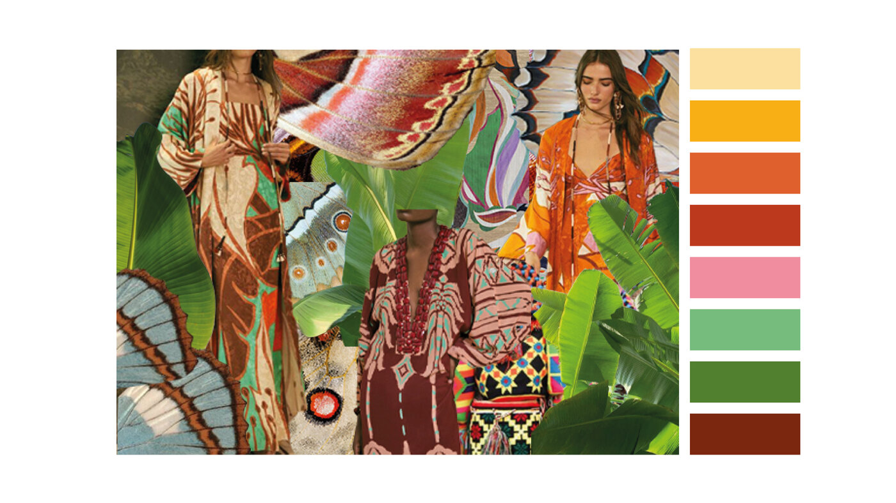
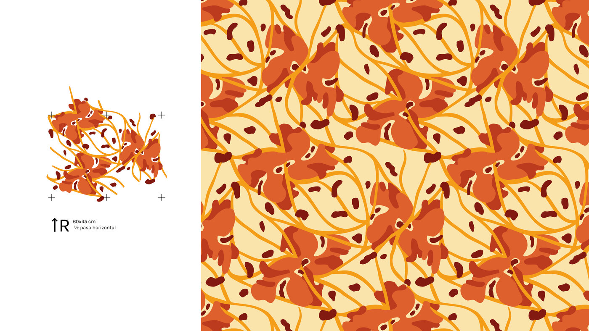
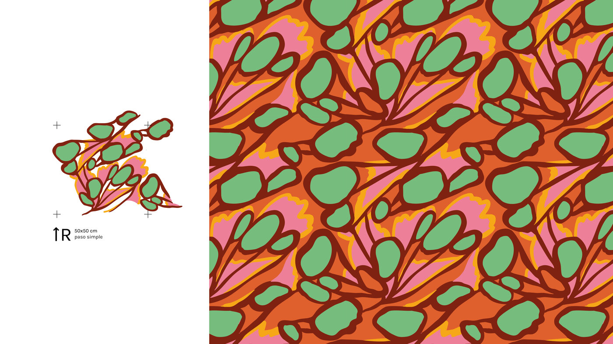
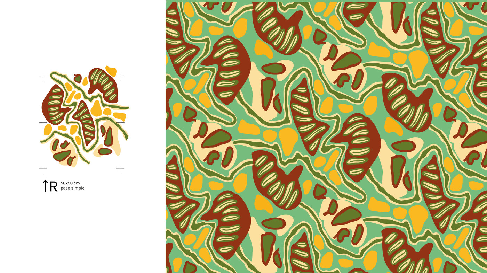
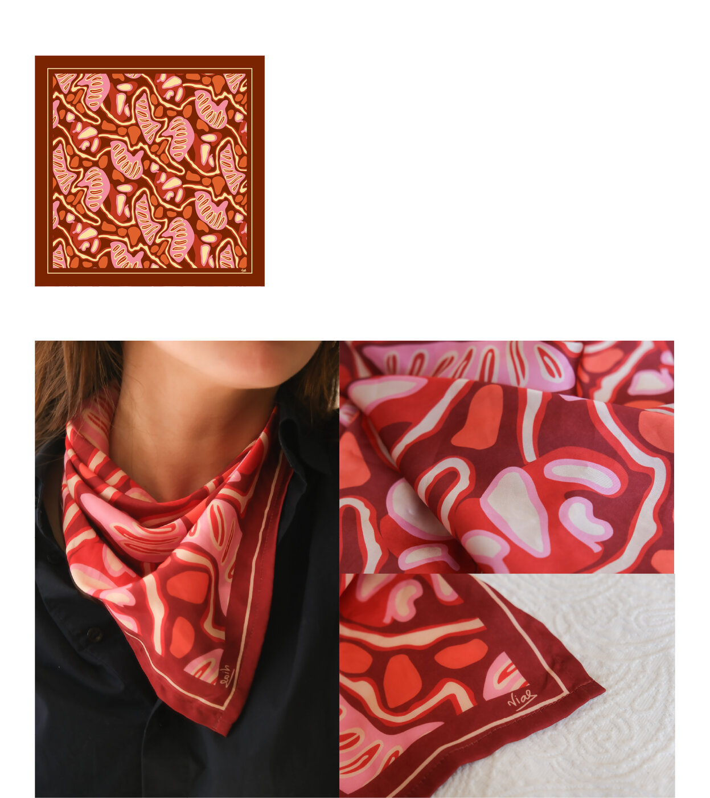
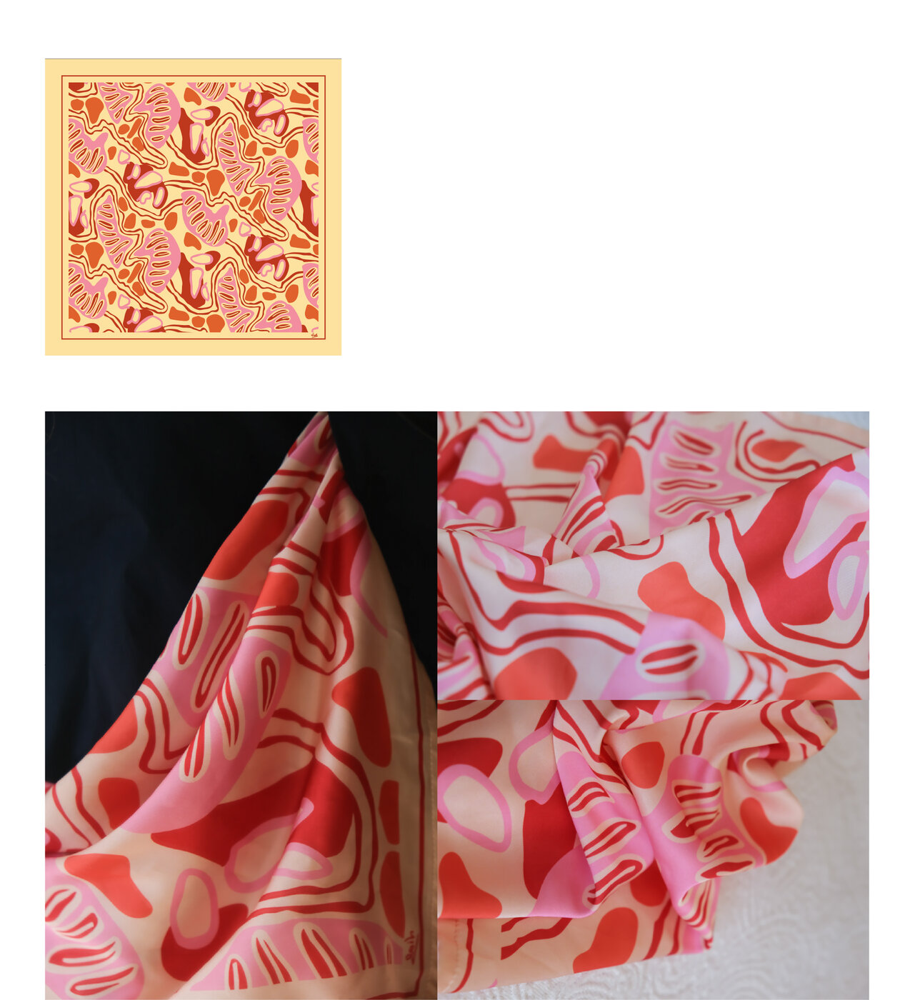

Una colección que combina diferentes formas orgánicas inspiradas en las alas de las mariposas con sus colores y los de su ambiente, creando un juego de texturas cautivadoras y alegres. Estas fueron sublimadas en seda para hacer pañuelos.